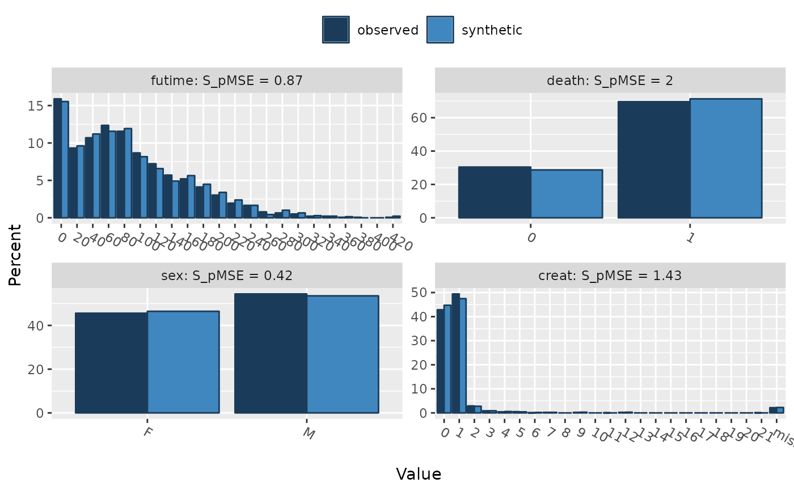
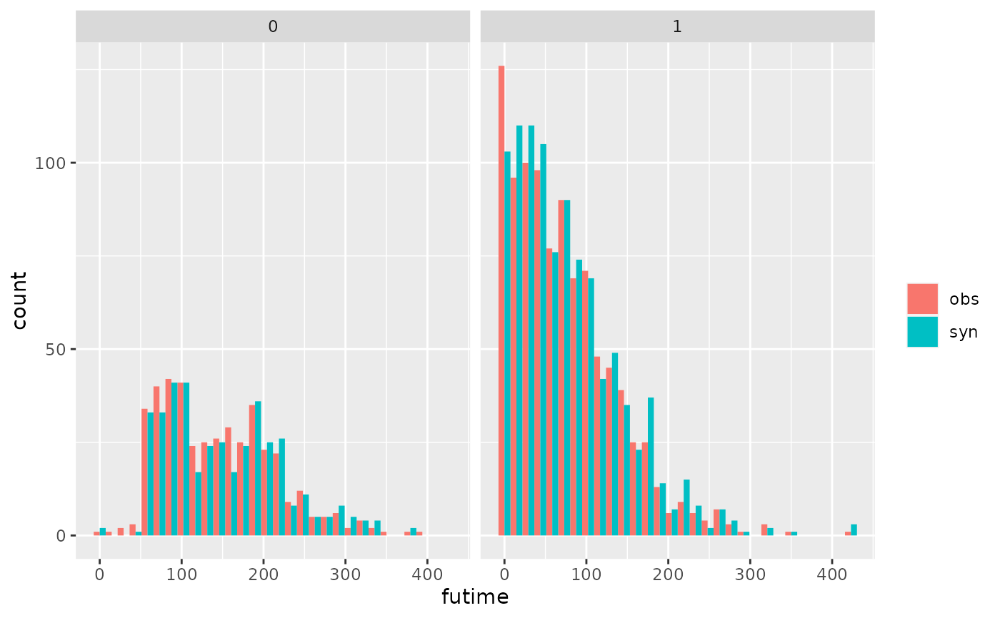
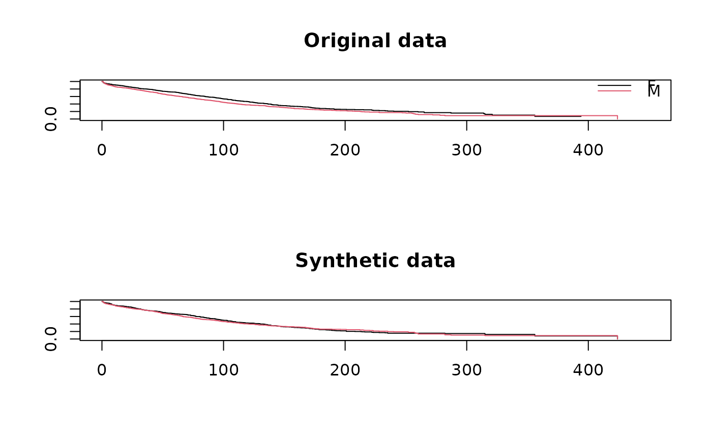

Synthesis of survival time by classification and regression trees (CART)
syn.survctree.RdGenerates synthetic event indicator and time to event data using classification and regression trees (without or with bootstrap).
Arguments
- y
a vector of length
nwith original time data.- yevent
a vector of length
nwith original event indicator data.- x
a matrix (
nxp) of original covariates.- xp
a matrix (
kxp) of synthesised covariates.- proper
for proper synthesis (
proper = TRUE) a CART model is fitted to a bootstrapped sample of the original data.- minbucket
the minimum number of observations in any terminal node. See
ctree_controlfor details.- ...
additional parameters passed to
ctree.
Details
The procedure for synthesis by a CART model is as follows:
For each
xpfind the terminal node.Randomly draw a donor from the members of the node and take the observed value of
yeventandyfrom that draw as the synthetic values.
The function is used in syn() to generate survival times
by setting elements of method in syn() to "survctree".
Additional parameters related to ctree function,
e.g. minbucket can be supplied to syn() as
survctree.minbucket.
Where the survival variable is censored this information must be supplied
to syn() as a named list (event) that gives the name of the variable
for each event indicator. Event variables can be a numeric variable with
values 1/0 (1 = event), TRUE/FALSE (TRUE = event) or a factor with 2 levels
(level 2 = event). The event variable(s) will be synthesised along with the
survival time(s).
Value
A list with the following components:
- syn.time
a vector of length
kwith synthetic time values.- syn.event
a vector of length
kwith synthetic event indicator values.- fit
the fitted model which is an item of class
ctree.object.
Examples
### This example uses the data set 'mgus2' from the survival package.
### It has a follow-up time variable 'futime' and an event indicator 'death'.
library(survival)
### first exclude the 'id' variable and run a dummy synthesis to get
### a method vector
ods <- mgus2[-1]
s0 <- syn(ods)
#> Warning: In your synthesis there are numeric variables with 5 or fewer levels: pstat, death.
#> Consider changing them to factors. You can do it using parameter 'minnumlevels'.
#>
#> Synthesis
#> -----------
#> age sex dxyr hgb creat mspike ptime pstat futime death
#>
### create new method vector including 'survctree' for 'futime' and create
### an event list for it; the names of the list element must correspond to
### the name of the follow-up variable for which the event indicator
### need to be specified.
meth <- s0$method
meth[names(meth) == "futime"] <- "survctree"
evlist <- list(futime = "death")
s1 <- syn(ods, method = meth, event = evlist)
#> Variable(s) {death} with method(s) {cart} removed from 'visit.sequence'
#> because used as event indicator(s).
#> Any event indicators will be synthesised along with the corresponding survival time(s).
#>
#> Warning: In your synthesis there are numeric variables with 5 or fewer levels: pstat.
#> Consider changing them to factors. You can do it using parameter 'minnumlevels'.
#>
#> Synthesis
#> -----------
#> age sex dxyr hgb creat mspike ptime pstat futime
### evaluate outputs
## compare selected variables
compare(s1, ods, vars = c("futime", "death", "sex", "creat"))
#>
#> Comparing percentages observed with synthetic
#>

#>
#> Selected utility measures:
#> pMSE S_pMSE df
#> futime 0.000158 0.872877 4
#> death 0.000090 1.999082 1
#> sex 0.000019 0.418831 1
#> creat 0.000324 1.433824 5
## compare original and synthetic follow up time by an event indicator
multi.compare(s1, ods, var = "futime", by = "death")
#>
#> Plots of futime by death
#> Numbers in each plot (observed data):
#>
#> death
#> 0 1
#> 421 963
#> `stat_bin()` using `bins = 30`. Pick better value with `binwidth`.

## compare survival curves for original and synthetic data
par(mfrow = c(2,1))
plot(survfit(Surv(futime, death) ~ sex, data = ods),
col = 1:2, xlim = c(0,450), main = "Original data")
legend("topright", levels(ods$sex), col = 1:2, lwd = 1, bty = "n")
plot(survfit(Surv(futime, death) ~ sex, data = s1$syn),
col = 1:2, xlim = c(0,450), main = "Synthetic data")
